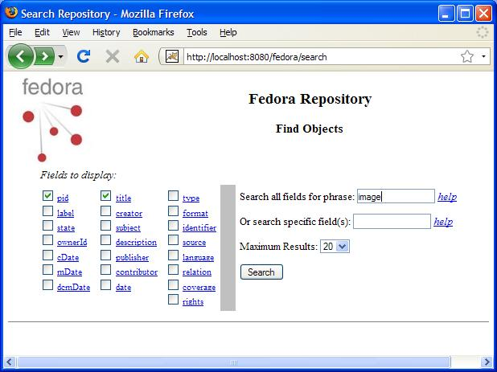
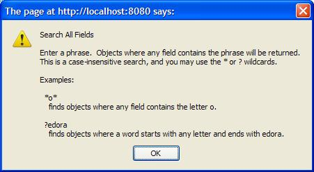
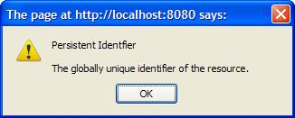

Introduction
The Search Interface provides a mechanism for searching and browsing the Fedora repository. Upon ingestion, metadata from the Fedora System Metadata section and the Dublin Core (DC) Metadata section of the object are indexed in a relational database, and may be searched using this interface. The DC Metadata section is an optional Implementor-Defined XML Metadata datastream in the object, where the Datastrem ID is DC, and the XML conforms to the schema at http://www.openarchives.org/OAI/2.0/oai_dc.xsd. If a Dublin Core metadata datastream is not provided, Fedora will construct a minimal DC datastream consisting of the elements dc:title and dc:identifier. The value for dc:title will be obtained from the object's label (if present in the object) and the value for dc:identifier will be assigned to the object's persistent identifier or PID.
The search interface provides both simple and advanced searching via a web form included with the repository software. All queries are case insensitive. Simple Search enables queries of words and phrases occurring anywhere in than object's indexed metadata fields. Advanced Search enables fielded searching across any combination of metadata elements using string comparison operators ( = and ~ ) for string fields, and value comparison operators ( =, >, ≥, <, ≤ ) for date fields (dc:date fields may be treated as both). The wildcards, * and ? may be used in any string-based query.
Search Interface Syntax
The Fedora Search Interface is implemented as a java servlet and can be accessed using the following syntax:
- http://hostname:port/fedora/search
- hostname - required hostname of the Fedora server.
- port - required port number on which the Fedora server is running.
- fedora - a required part of the Fedora servlet path.
- search - a required part of the Fedora servlet path.
Search Interface Web Form
An example of the Search Interface Web Form is displayed below. To perform a search, check the box next to the fields that you would like returned in the search results, enter your search query in either the simple search or advanced search text box, and click the submit button. In the example, the label fields of pid and label are checked and the query is to search for the word "image" in any of the indexed fields.

Search Results
The results of the sample search are displayed below. Note that the entries returned for the PID field are hyperlinks. Clicking on the PID hyperlink will invoke the Default Disseminator on the specified object and display the Object Profile for the object. The Search Interface provides an easy means of browsing and examining objects in the repository.

Simple Search Query Help
The Simple Search query searches both the Dublin Core metadata and the Fedora System Metadata fields. Clicking on the the help hyperlink next to the Search all fields for phrase text box will display additional help about Simple Search as displayed below.

Fielded Search Query Help
The Fielded Search query enables searching of specific fields provided in the query. Clicking on the the help hyperlink next to the search specific field(s) text box will display additional help about Fielded Search as displayed below.

Search Field Name Help
Help is also available on each search field name if you are unfamiliar with the search field labels. Clicking on the hyperlink associated with each search field label provides additional help on that specific search field name. An example of the help provided for the pid search field is displayed below.
